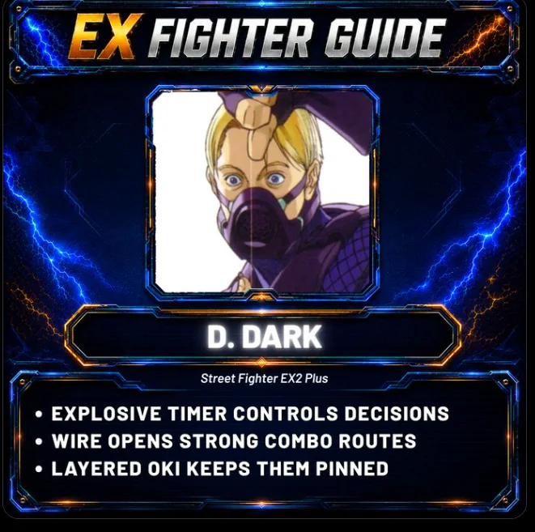
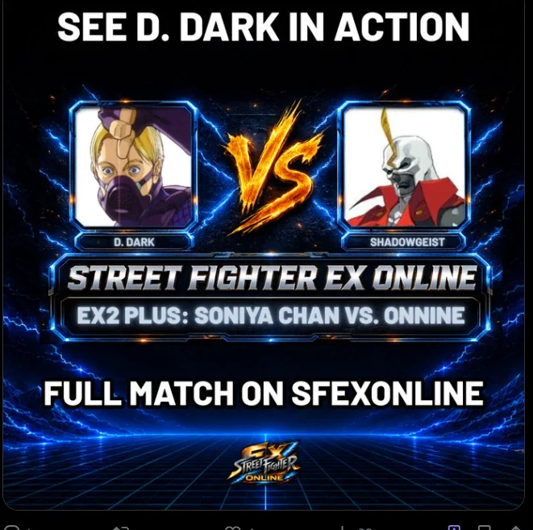
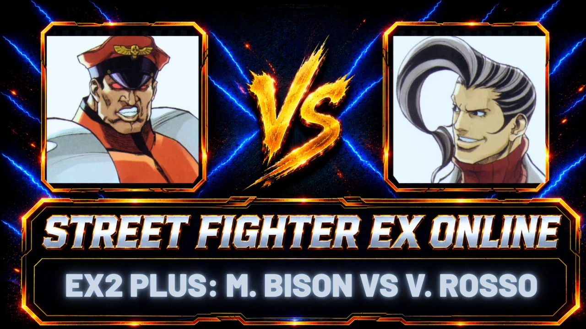

CHARACTER IDENTITY
A clear first look at who the fighter is and the kind of player they may appeal to.

Not sure who to play as? Meet the cast, understand what makes each fighter worth trying and find real matches that show them in action.


EX Fighter Guide is built for discovery, not tier-list homework. Each guide gives you a quick feel for the fighter, shows what makes them fun or useful, then connects that idea to footage you can actually watch.
A clear first look at who the fighter is and the kind of player they may appeal to.
A short gameplay example focused on the movement, tools or ideas that make the character worth trying.
A real set from the archive so the guide ends with the character being used in an actual match.

▶ FIGHTER GUIDE #3EX Fighter Guide #3 connects directly to MasterFighterX vs VegaChamp, giving you a real EX2 Plus set to watch after the guide.
The character library will grow with the weekly series. For now, use the game hubs to move between matches, guides and the parts of EX you want to explore next.